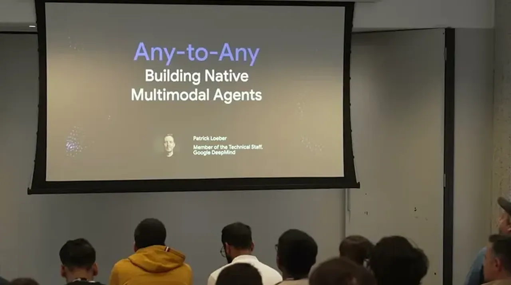
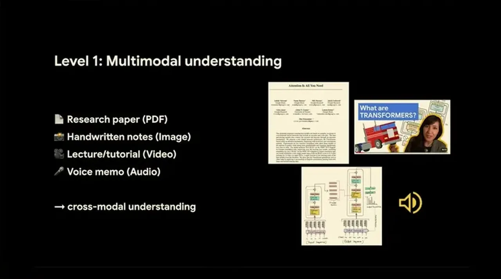
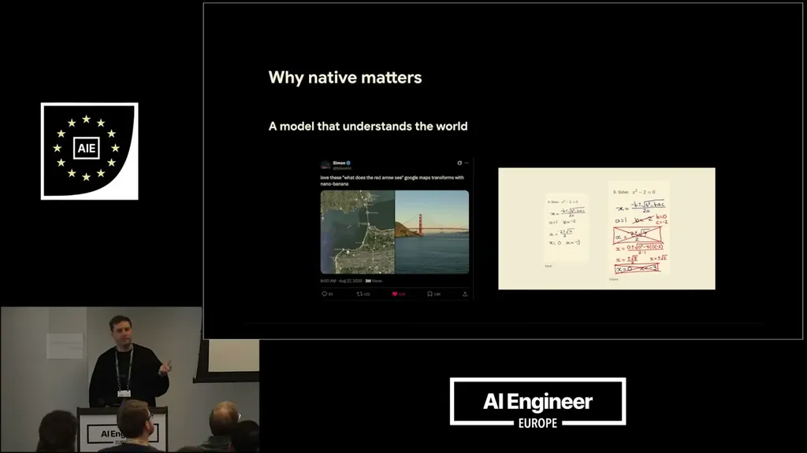
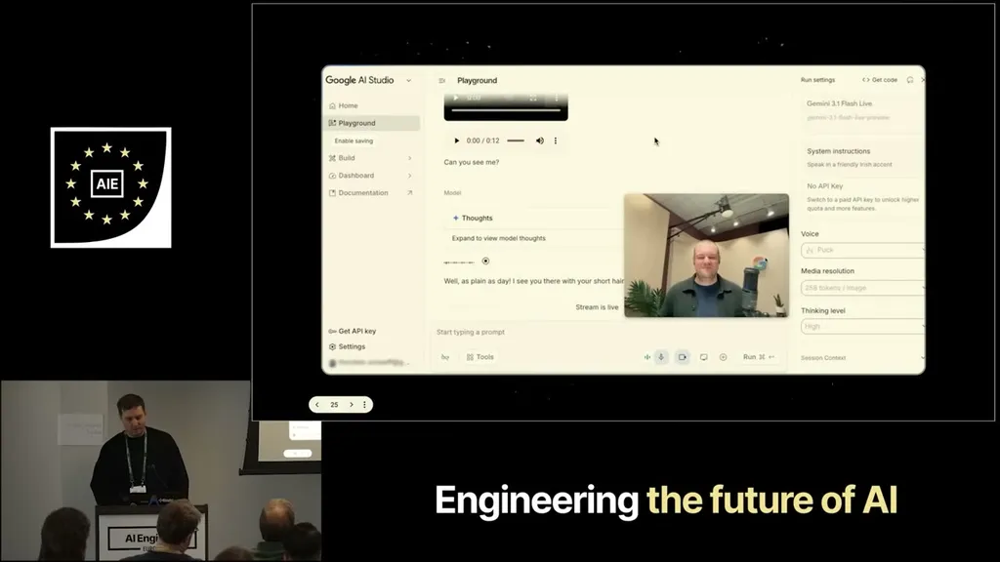

Gemini's any-to-any capability list (text, code, image, audio, video in; text, image, speech, video, function calls, code out) describes a family of models, not one unified multimodal model. The main Gemini series understands multiple modalities but only outputs text; specialized native generation models (e.g. Nano Banana for images, a separate speech model) sit alongside it. The recommended architecture uses Gemini as a reasoning model that decides what to create and calls the specialized models via function calling, rather than hard-coding a fixed pipeline.
“Gemini does not only understand text, right? It's natively multimodal, so you can also feed in code, image, audio, video”
▶ watch at 01:02“actually there are still different models. It's not one multimodal model yet”
▶ watch at 01:35“the agent should be able to decide what to create rather than where we hard code the pipeline”
▶ watch at 03:08
One minute of audio consumes about 1920 tokens, and against Gemini's 1 million token limit that works out to over 9 hours of audio content; video runs to roughly 1 hour. Context caching, built into the API, is recommended for repeated queries against the same long file because it cuts costs by 90%.
“1 minute of audio translates to a 1920 tokens. And Gemini has a token limit of 1 million”
▶ watch at 06:14“you can combine it with context caching. This is built into the API. This is especially useful if you're loading longer files into Gemini and doing repeated queries because then it saves you 90% of the costs”
▶ watch at 07:15
Because the specialized generation models are trained on top of Gemini, they inherit world knowledge — the talk cites an example of drawing arrows on a map and having the model correctly render the Golden Gate Bridge, and using Nano Banana 2 to check math homework. A newly announced multimodal embedding model lets different modalities be combined into one unified vector space for applications like multimodal search.
“since Gemini understands the world here it's able to to correctly create a picture of the Golden Gate Bridge for you”
▶ watch at 11:56“we now have a multimodal embedding model where you can combine all the different modalities into one unified vector space which allows applications like multimodal search”
▶ watch at 15:34
The Live API is built on a new model (Gemini 3.1 Flash Live) described as audio-to-audio: a single architecture where audio goes in and audio comes out, eliminating the older cascaded pipeline of separate speech-to-text, LLM, and text-to-speech models.
“we call this an audio to audio model. So native audio generation it's only one architecture. Audio goes in and audio goes out. So you no longer have this cascaded pipeline with different models”
▶ watch at 14:01
The talk frames 'any-to-any' as a roadmap label more than a current architecture — worth noting for anyone evaluating Gemini against competitors on the basis of that marketing term. (ours)
| Stance | Claim | t |
|---|---|---|
| asserts | Gemini natively understands multiple input modalities including code, image, audio, and video. | 01:02 |
| asserts | Despite the any-to-any framing, Gemini is currently several separate models rather than one unified multimodal model. | 01:35 |
| recommends | Build the multimodal generation flow as an agent that decides what to create, not a hard-coded pipeline. | 03:08 |
| asserts | One minute of audio is about 1920 tokens, so Gemini's 1 million token limit fits over 9 hours of audio. | 06:14 |
| asserts | Context caching for repeated queries against long uploaded files saves 90% of the cost. | 07:15 |
| asserts | Because native generation models are built on Gemini, they understand the world well enough to correctly render a specific landmark from a rough map sketch. | 11:56 |
| asserts | The Live API's new model is a single audio-to-audio architecture, replacing cascaded speech pipelines. | 14:01 |
| asserts | A new multimodal embedding model combines modalities into one unified vector space for applications like multimodal search. | 15:34 |
Machine-readable copy embedded in this page (script#ontology) and in the corpus ontology.